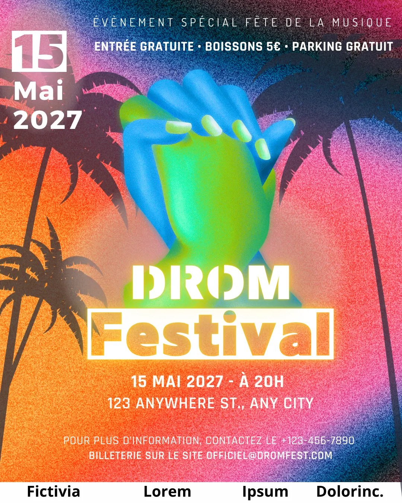
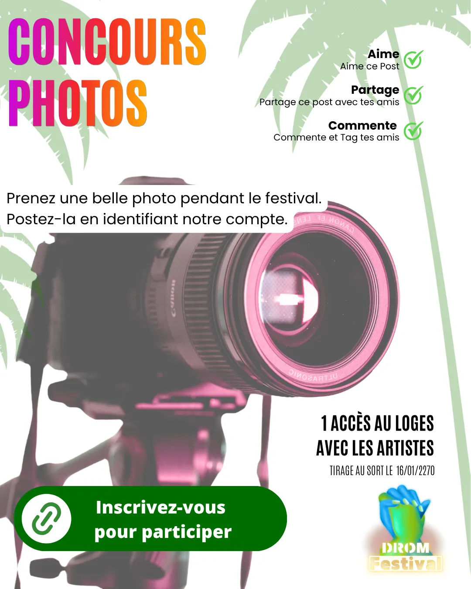

Tim Agoune
Tim Agoune01Objectif
Construire la stratégie réseaux sociaux d'un festival fictif : créer de la notoriété avant l'événement, vendre des billets et fidéliser une communauté pour l'année suivante.
02Démarche
Nous avons produit une proposition stratégique réseaux sociaux complète, du diagnostic au budget, ainsi que les premiers visuels du festival (affiches, identité). Ce projet combine la partie marketing — personas, tunnel de conversion, indicateurs de suivi — et la créativité pour développer la communication d'un événement culturel.
📄 Consulter la proposition stratégique (PDF, 17 p.) 📊 Télécharger le classeur de travail (Excel) — personas, benchmark, calendriers éditoriaux, influenceurs

03Moyens et outils
- Création de personas ;
- benchmark concurrentiel ;
- tunnel de conversion construit pour le dispositif ;
- calendrier éditorial ;
- chiffrage budgétaire du dispositif social media ;
- outils de création graphique pour les affiches.